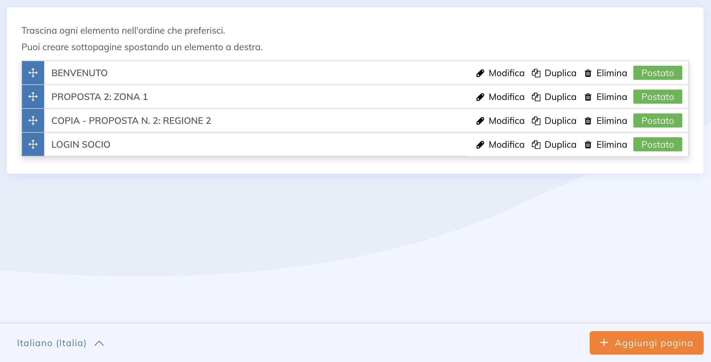

Che la tua organizzazione non profit debba ridisegnare il suo sito web o sia la prima, adottare le misure necessarie per arrivarci richiede tempo e organizzazione. In base alla nostra esperienza con diversi tipi di organizzazioni, abbiamo identificato i passaggi che ti consentono di creare un sito web in modo efficiente.
In questo articolo presenteremo cosa devi preparare in anticipo, come iniziare con l'applicazione Sito web e come collaborare in modo efficiente con il nostro team di esperti Yapla se usufruisci del nostro supporto (puoi saperne di più su questo servizio).
Inizia con la struttura del tuo sito
RACCOGLIERE I CONTENUTI
Il primo passo è preparare una struttura ad albero che definisca la struttura delle informazioni del tuo sito. Pensa agli obiettivi del tuo sito (reclutare nuovi membri, ricevere più donazioni? , ecc.) e la missione della tua associazione. Sarai quindi in grado di determinare i contenuti più pertinenti, che si tratti di testo, immagini o funzionalità da implementare.
IDENTIFICARE LE APPLICAZIONI NECESSARIE
Pensa alle applicazioni di cui hai bisogno. Ad esempio, puoi promuovere i tuoi eventi e le tue ultime notizie, aggiungere uno spazio per i membri, visualizzare un elenco di membri con la loro geolocalizzazione, aggiungere moduli, condurre una campagna di donazione, ecc.
CREA IL PROTOTIPO DEL TUO SITO
Una volta determinati la struttura ad albero, i contenuti e le applicazioni, puoi iniziare a creare il tuo sito. Basta premere il pulsante «Aggiungi sito web» nell'applicazione Sito web. Se lavori con il nostro team o con un designer o un integratore, ti consigliamo di personalizzarlo a tua immagine. Poi è il momento di determinare la posizione delle sezioni.

STRUTTURA LA PAGINA PRINCIPALE
Pensa alla struttura delle tue pagine: al numero di colonne che conterranno, alla posizione del tuo menu di navigazione e alle sezioni che torneranno da una pagina all'altra. Ad esempio, l'intestazione del tuo sito sarà la stessa in ogni pagina del sito, generalmente conterrà il tuo logo, il login del membro, i social networks, il selettore della lingua, il menu, ecc. Stessa cosa per il piè di pagina in cui puoi aggiungere i tuoi dati di contatto, un modulo per iscriverti alla tua newsletter, ecc.
Per evitare di dover configurare manualmente queste sezioni in ogni pagina, ti consigliamo di lavorare con una pagina master. Viene utilizzato per applicare automaticamente la struttura della pagina desiderata e gli elementi ripetitivi alle pagine interessate. Per scoprire come configurare la tua pagina master, consulta il nostro articolo della guida online su come funzionano le pagine master.

CREA LE TUE PAGINE
Una volta creata la tua pagina master, puoi iniziare a creare pagine web e aggiungere contenuti e funzionalità, determinati durante la struttura del tuo sito, utilizzando i moduli Yapla. Un modulo è un componente grafico che gestisce una o più funzioni avanzate di Yapla. Quindi non hai bisogno di alcuna conoscenza tecnica. Tutto viene eseguito automaticamente e ogni modulo è configurabile in base alle tue esigenze.
Ad esempio, con il nostro modulo Elenco membri, il nostro sistema richiama le informazioni e genera automaticamente la lista dei membri sul tuo sito.
Per determinare quali moduli devono essere utilizzati per ciascuna delle tue funzionalità, consulta la lista dei nostri moduli offerti per l'applicazione del sito web.

CONFIGURARE IL CONTENUTO DEI MODULI
Alcuni contenuti relativi ai moduli devono essere configurati all'esterno delle pagine web. Ad esempio, per mostrare le tue notizie, devi creare articoli. Per sapere come fare, puoi leggere il nostro articolo Come usare lo strumento per la creazione di articoli? Per visualizzare i tuoi eventi, devi crearli nell'applicazione Eventi e per aggiungere un elenco di membri, devi aggiungerli nell'applicazione Membri.
Fai clic su  per visualizzare il tuo prototipo online.
per visualizzare il tuo prototipo online.

Personalizza il tuo sito web
DETERMINARE IL DESIGN
Una volta aggiunti i contenuti e le funzioni al sito, devi passare alla fase di progettazione. Se non hai usato un modello, puoi usare un designer. Quest'ultimo inizierà progettando modelli statici, che consentano una panoramica dell'aspetto in relazione alla tua identità visiva e all'esperienza che si prova quando un utente visita il tuo sito. Può anche progettare una guida di stile per determinare la gerarchia dei titoli, i diversi stati dei pulsanti (ad esempio, come reagisce al passaggio del mouse sul cursore), i colori e la tipografia da utilizzare, ecc. Ciò garantisce l'uniformità dell'intero sito e il rispetto dell'identità visiva della tua organizzazione no profit.
INTEGRARE IL DESIGN NEL SITO
Una volta che hai il design personalizzato del tuo sito, un integratore deve occuparsi della riproduzione del design in HTML. Dovrà assicurarsi che sia adattivo, vale a dire che si adatti alle diverse piattaforme web e a tutti i tipi di schermi. Per aggiungere i tuoi stili grafici, puoi leggere il nostro articolo sul design personalizzato della pagina.
E ora, dai vita al tuo sito web!
Ora hai un sito web che ti permette di trovarti sul web, saperne di più sulla tua organizzazione non profit e raggiungere i tuoi obiettivi. Tutto quello che devi fare ora è dargli vita, aggiungendo le tue notizie, eventi, nuovi membri, nuove campagne, ecc. Assicurati anche di collegare il tuo sito web agli strumenti di gestione integrati di Yapla per automatizzare le attività amministrative e lasciare che Yapla lavori per te!
Vuoi saperne di più sulla nostra metodologia per creare un sito web in modo efficiente? Oppure vuoi saperne di più sul nostro supporto personalizzato per gli utenti di Yapla?

Commenti
Accedi per aggiungere un commento.